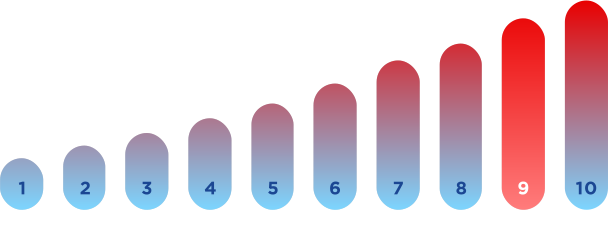
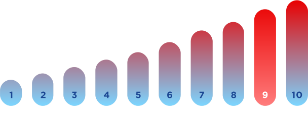
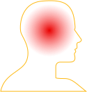
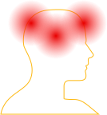
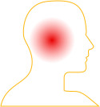
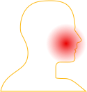

Про отит
ШКАЛА ІНТЕНСИВНОСТІ БОЛЮ
Інтенсивність болю при отиті 9 з 10
Інтенсивність болю при отиті 9 з 10
Запальний процес, що охоплює слизову оболонку середнього вуха: барабанної порожнини, клітин соскоподібного паростка і слухової труби
Гостра вірусна респіраторна інфекція
Біль у вусі, неспокійний сон, дратівливість
Головний біль
Менингіт
Мігрень
Мастоідит
Запаморочення
Глухота
Параліч лицьового нерва
За кількістю ускладнень гострий середній отит займає 2-е місце серед ЛОР-патологій, у 30% дітей він має затяжну дію та схильність до рецедивів
Наявність гострих середніх отитів є показанням для госпіталізації
Отит – одне з найпоширеніших захворювань у дітей віком до 3-х років. Причини: дитячий імунітет, який ще не сформувався, ускладнення після вірусних та інфекційних захворювань.
До того ж слухова труба ще надто тонка (прохід між носоглоткою та середнім вухом), тому інфекція потрапляє в барабанну порожнину з носоглотки та викликає запалення [9].
Дорослі теж страждають на отит. Ускладнення можуть вплинути на втрату слуху. За даними ВООЗ до 2050 року кожна четверта людина у всьому світі страждатиме через втрату слуху в тій чи іншій мірі [1]. Які симптоми і як вилікувати запалення вуха – на ці питання потрібно знати відповідь, щоб при найменших підозрах на захворювання, що починається, записатися на прийом до отоларинголога. Тільки фахівець зможе точно діагностувати отит та призначити відповідне лікування.
Що не варто робити при симптомах запалення вуха? У жодному разі не можна займатися вдома самолікуванням. Біль у вусі необов’язково означає запалення вуха, а запаморочення та апатія зі втратою апетиту теж можуть мати інші причини.
Тому при перших підозрах на отит потрібно йти до лікаря отоларинголога: тільки він може провести правильну діагностику і призначити відповідний препарат.
Якщо не затягувати з візитом до поліклініки, можна вилікувати запалення вуха за більш короткий термін та найменш агресивними для організму препаратами.
Таким препаратом є ОТИПАКС® – ефективний помічник у боротьбі з отитом. Цей анальгетик місцевої дії має протизапальні властивості.
Феназон та лідокаїн у складі зменшують біль вже через 5 хвилин після закапування. Через 15-30 хвилин ви практично можете забути про больові відчуття. Крім того, активні компоненти знімуть запалення, повернувши вам комфорт.
Скільки часу потрібно, щоб захворювання пройшло? Курс лікування ОТИПАКС® триває максимум 10 днів, а взагалі все залежить від занедбаності хвороби та організму пацієнта [6].
Найперший «дзвіночок» — це біль різного ступеня інтенсивності та різний за характером. Він може бути тупою, але до ночі посилюватись, накочувати хвилями. Тоді біль стає гострим, іррадіює в щелепу або до скронь.
Закладеність вуха при отиті, шум у вусі або стукіт – також є доказами вушного запалення, що почалося. А одного ранку, прокинувшись, можна виявити, що хворе вухо оглухло. Це вже та стадія, коли зволікати більше неможливо, і задля збереження можливості чути звуки навколишнього світу, потрібно негайно йти до отоларинголога.
Дитина, зазвичай, вже у тому віці, коли вона здатна розповісти, що має біль і закладеність у вухах. Решта дбайливих батьків і самі помітять втрату апетиту, дратівливість, неспокійний сон і лихоманку, часткову втрату слуху або те, що з вуха дитини тече біла, коричнева або жовта рідина.
Немовля ще поки не здатне повідати про свої страждання, тому батьки повинні звернути увагу на його поведінку: потирання вух, більш сильний плач, ніж зазвичай; проблеми зі сном, дратівливість та неспокійність. Ці ознаки можуть говорити про отит у немовляти [6].
Причини розвитку запалення вуха
Причин виникнення отиту безліч: віруси, зовнішні подразники та травми. Зовнішній отит часто провокують грибкові чи дріжджові інфекції. Також запалення з’являється після потрапляння суттєвої кількості води у вухо. Волога – відмінне середовище для зростання бактерій. До того ж, вона викликає свербіння, через що постійно хочеться чухати вухо (а значить, травмувати).
Отит розвивається і в ослабленому хворобою організмі, і в людини із слабким імунітетом.
Недотримання правил елементарної гігієни провокує зростання бактерій і в подальшому запалення вуха. Занадто ретельне її вишкрібання з вуха теж не найкраще рішення, адже вушна сірка захищає слуховий канал.
Запалення вуха може розвинутись і від берушів або навушників, тому що вони закривають слуховий прохід, де знаходиться патогенна мікрофлора. До того ж, не всі очищають щодня навушники перекисом чи спиртом. І з кожним днем на них накопичуються всілякі бактерії [7].
Іншими словами, запалення вуха. Будь-яка людина, незалежно від віку, може захворіти на цю недугу. Отит – це інфекційне захворювання, яке може призвести до страшних та незворотних наслідків. Іноді вушна інфекція може пройти сама собою, але якщо краще не стало, потрібно йти до лікаря.
Найголовніша ознака того, що з організмом не все гаразд – це біль та дискомфорт. Свербіж і набряк, відчуття тиску і тяжкості у вусі або тупий, іноді гострий і прострілюючий біль: ось як виглядає отит.
Не завжди біль у вусі – це ознака отиту. Неприємні відчуття можуть бути пов’язані з іншими факторами, наприклад, фізичне пошкодження або незручна поза під час сну, коли притиснули — на ранок може боліти.
Ще одна причина – сірчана пробка. Тим більше, що симптоми схожі: ніби вухо заклало, шумить у вухах і знизилася гострота зору. Як відрізнити отит від сірчаної пробки?
Відчуття закладеності при сірчаній пробці відчувається, коли сірка, що накопичилася у вушному каналі, забилася там і утворила закупорку каналу. З’являється відчуття дискомфорту, шум у вусі та запаморочення. Потім виникає сильний біль у вусі: це пробка стискає барабанну перетинку.
Увага! Не можна самостійно намагатися очистити вухо від сірчаної пробки в домашніх умовах навіть ватною паличкою. Тим більше, не варто туди лізти сірником або іншими предметами: так ви тільки глибше заштовхнете скупчення сірчаного секрету і, що зовсім небезпечно, можете порвати барабанну перетинку і втратити слух.
Біль при отиті викликаний патогенними процесами у вусі. Крім нього відзначаються:
Не всі знають, але сірчана пробка провокує виникнення отиту: у середині розмножується патогенна мікрофлора, через що виникає запальний процес.
Отже, сірчана закупорка часто стає причиною появи вушної інфекції [2]. Особливо викликає тривогу те, що запалена зона з бактеріями перебуває у безпосередній близькості від мозку.
Біль і закладеність вуха при отиті – не єдині ознаки інфекції, що розвивається. Осередок може бути на якійсь із трьох ділянок вуха, власне, за місцем локації і розрізняють отити.
Щоб трохи розуміти терміни, які ви почуєте в кабінеті отоларинголога, розглянемо докладніше кожну запалену ділянку.
Зовнішній отит — запалення зовнішнього слухового проходу, вушної раковини або обох відразу. Часто буває хронічним, причому винний швидше за все сам пацієнт через надмірну старанність при чищенні вух [3].
Середній отит – це інфекція у просторі за барабанною перетинкою. Найчастіше хворіють діти віком від 3 місяців до 3 років. Дуже небезпечна форма, оскільки може призвести до неперфоративного або хронічного гнійного середнього отиту, коли інфекція не проходить навіть після медикаментозного лікування. У барабанній перетинці можуть виникнути розриви [4].
Отит внутрішнього вуха може бути спричинений вірусами і бактеріями, наприклад після нещодавно перенесеного грипу, ГРВІ. Знижений імунітет також впливає на виникнення хвороби. Але найчастіше хвороба виникає через запалення в середньому вусі [5].
Кожен із видів вушного запалення має свою клінічну картину, хоча є й загальні ознаки: біль, набряклість, підвищена температура.
Запалення середнього та зовнішнього вуха у дорослих та дітей можна визначити за такими симптомами:
При внутрішньому отиті стан хворого настільки тяжкий, що йому складно сидіти та стояти. Якщо вчасно звернутися до ЛОРа, стан покращиться через тиждень. При ускладненнях хвороба прогресує протягом 15-20 діб.
На запущеній стадії слухові нервові рецептори гинуть і вже неможливо відновити слух [5].
Otipax 001 04.01.22
Список літератури:
Висновок зроблено на основі аналітичних даних інформаційно-аналітичної бази «Pharmxplorer», яка належить ТОВ «Проксіма Рісерч» - лікарський засіб Отипакс® компанії Biocodex (Франція) займає 1 (перше) місце в АТС 3 рівня S02D ІНШІ ЗАСОБИ, ЩО ЗАСТОСОВУЮТЬСЯ В ОТОЛОГІЇ у натуральному (упак.) та грошовому вимірах (грн.) на території України (без урахування тимчасово окупованих територій) в динаміці за період з 2020 року по 1 півріччя 2021 року. Комбінація феназону з лідокаїном зумовлює синергічний знеболювальний/протизапальний ефект. Дія препарату (зменшення болісності барабанної перетинки та редукція запалення) розпочинається з 5-ї хвилини після закапування.
Реклама лікарського засобу. Перед застосуванням обов’язково
ознайомтесь з інструкцією та проконсультуйтесь з лікарем.
Інструкція для медичного застосування лікарського засобу Отипакс ®
згідно наказу МОЗ України від 24.06.2019 № 1438. Р.П. №
UA/5205/01/01, наказ МОЗ України від 24.11.2016 № 1275.
Відпускається без рецепта. Зберігати у недоступному для дітей
місці.
ТОВ «БІОКОДЕКС УКРАЇНА», пр. Степана Бандери, 28-А, Літера Г,
Київ, Україна, 04073. Тел./факс: +38044 2377784
Виробник: «БІОКОДЕКС», Франція. Всі права захищені Ot 02
17.10.2019.
Виробник ОТИПАКС® французька компанія БІОКОДЕКС. Цей веб-сайт
призначений для української аудиторії та підпорядковується
правовим нормам, що діють в Україні © Copyright Biocodex 2022